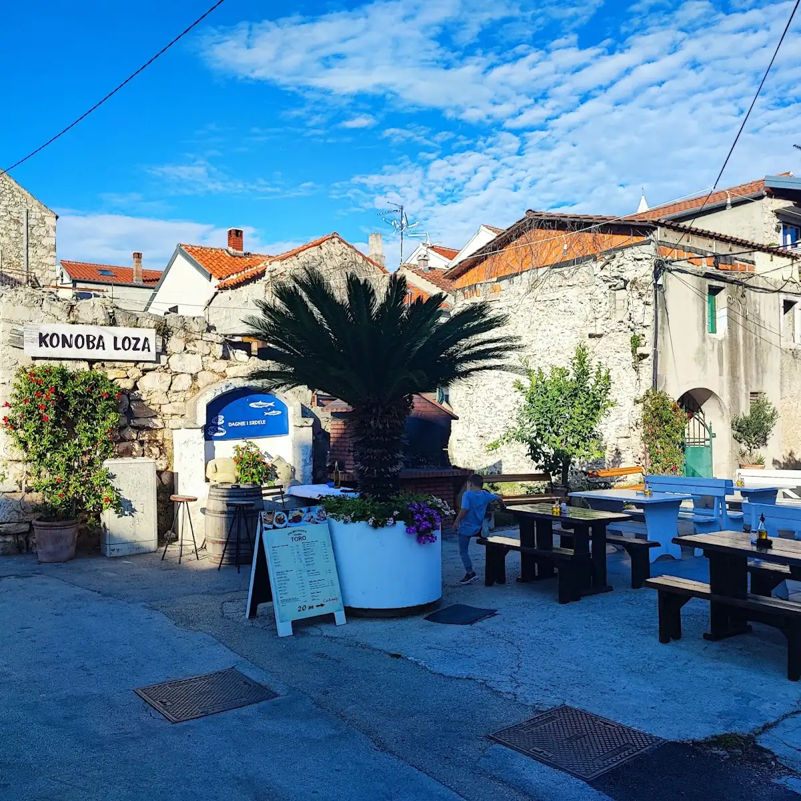
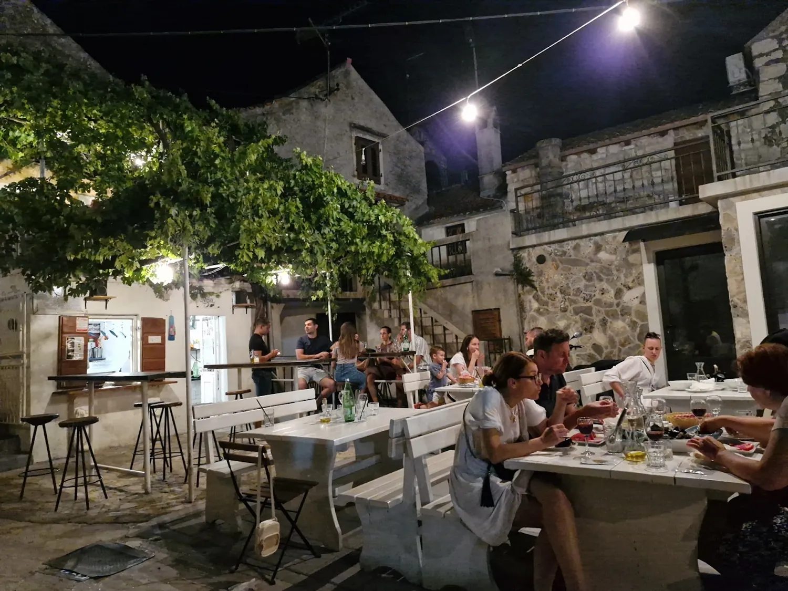
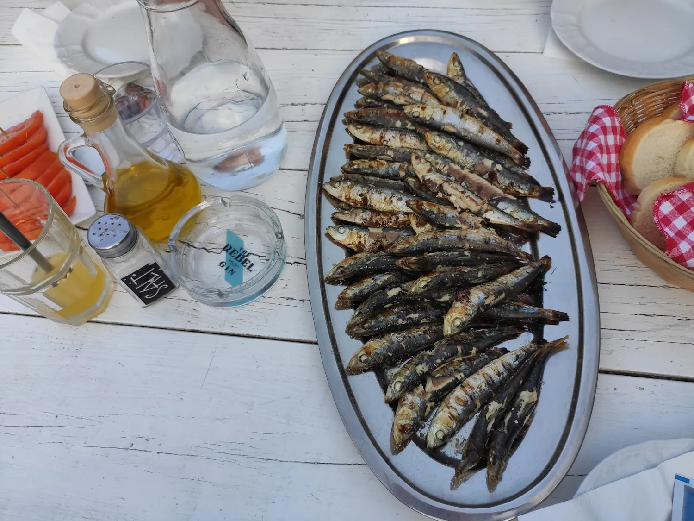
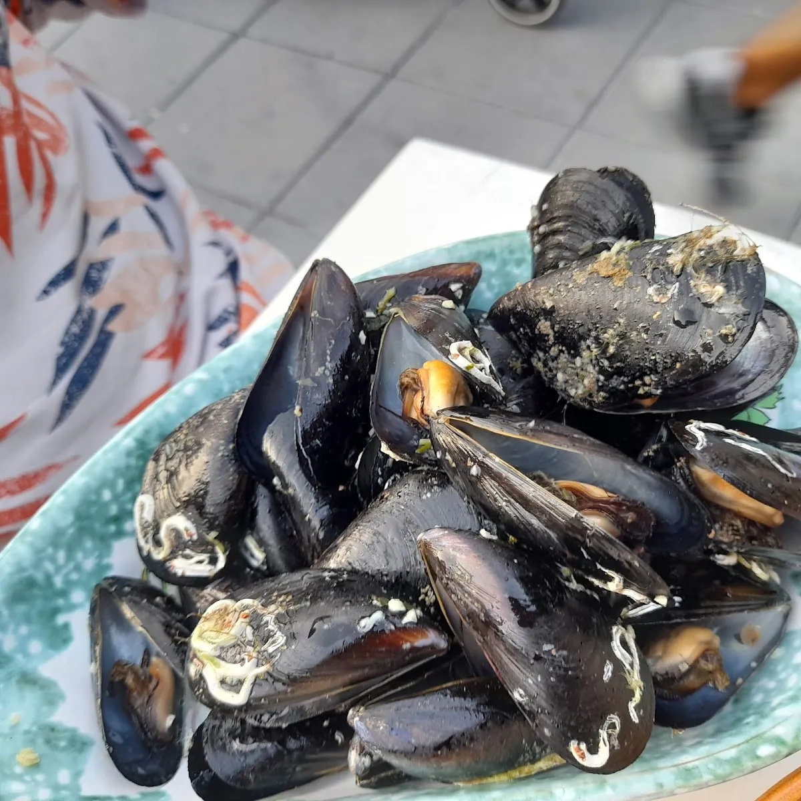
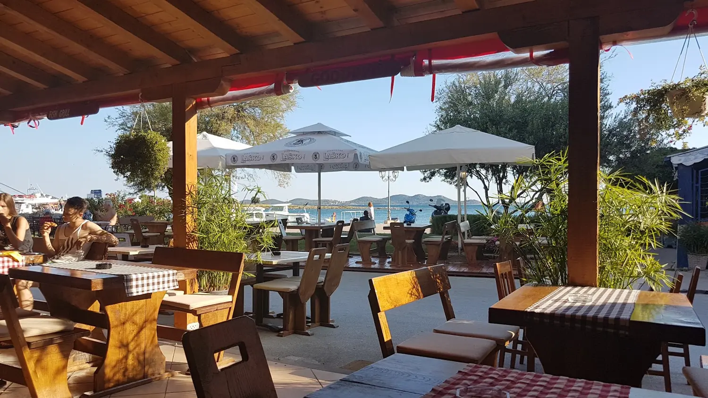
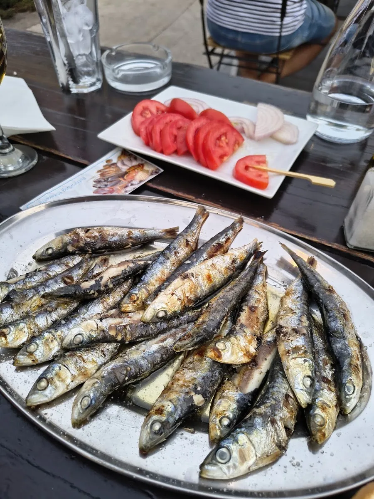
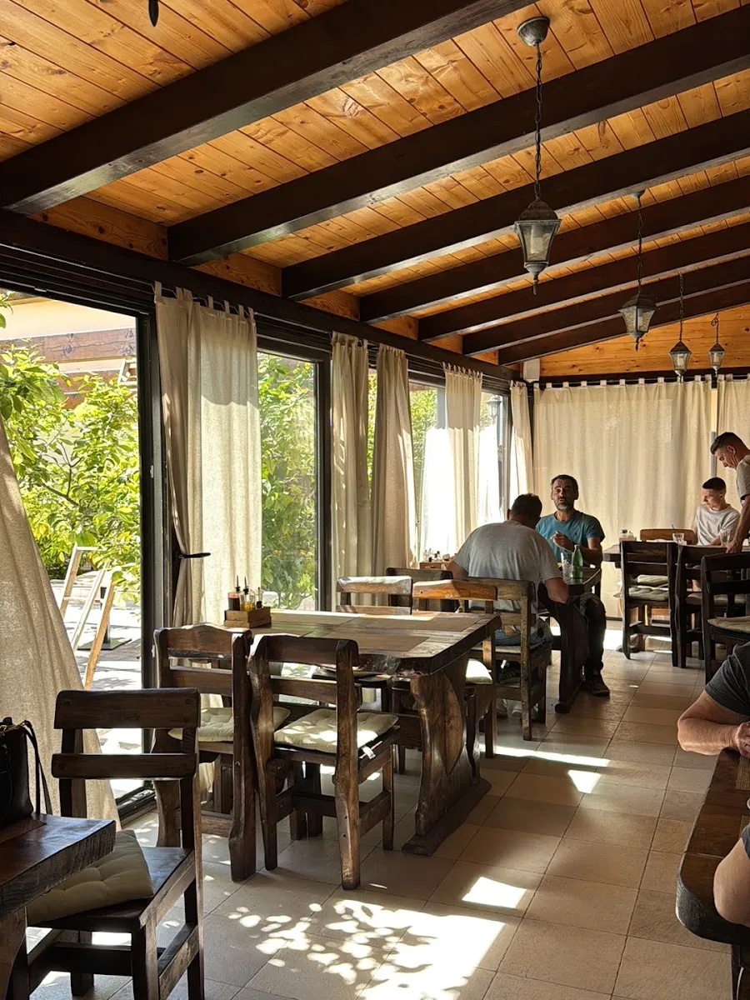

U hladu loze, između mora i jezera.




Konoba Loza izrasla je iz jedne jednostavne istine: najbolja hrana nije ona koja se izmišlja, nego ona koja se pamti.
U Pakoštanima, gdje Jadransko more i Vransko jezero dijele samo uski pojas dalmatinske zemlje, pronašli smo naš dom. Sjedimo u hladu stare loze, kuhamo po majčinim receptima, otvaramo domaće vino od grožđa koje raste na ovoj istoj zemlji. Riba dolazi svako jutro s mora. Janjad se peče ispod žara. Svaki obrok je priča o ovom kraju — o kamenu, suncu, soli i mirisu mora pomješanog s mirisom borovine.
Vinova loza cvate iznad naših stolova. Prvi mladici probijaju staru šipu, drvo zazeleni, i znamo — sezona počinje. Čistimo kamen, postavljamo stolice, otvaramo kapije konobe.
Svježa riba stiže svako jutro s Jadrana. Gradela gori od zore. Lignje, brancin, orada — sve što more dâ toga dana, mi skuhamo toga dana. Ništa zamrznuto, ništa iz jučer.
Berba grožđa. Pravljenje domaćeg vina po starom receptu — bez žurbe, bez kompromisa. Vino odleži onoliko koliko treba. Kad bude gotovo, bit će na vašem stolu.
Ispod žara, janjetina i riba čekaju sat, dva, tri. Peka ne trpi žurbu. Zima je pravo doba za taj ritual — za dim, za miris, za okus koji se ne može požuriti.
Domaće vino. Domaće ulje. Domaće srce. Bez obzira na godišnje doba, to se ne mijenja. Ovo nije samo konoba — ovo je naš dom, i svaki gost sjedi za našim stolom.
Jelovnik prati godišnja doba i svježi ulov.
Pitajte nas.

Pakoštane leže na uzanom pojasu dalmatinske obale između Jadranskog mora i Vranskog jezera — najvećeg prirodnog jezera u Hrvatskoj. Samo pet minuta pješice dijeli dva potpuno različita ekosustava.
Vransko jezero, dugo 14 kilometara, dom je 57 vrsta ptica i zaštićeno je kao posebni zoološki rezervat. S jedne strane šljunčane plaže i bistro more, s druge trska, ribe i tišina jezera. Ova dvojnost oblikuje sve što kuhamo — riba iz mora i riba iz jezera, divljač iz šikare, povrće iz lokalnih vrtova.


Pozovite nas za rezervaciju stola.
Poziv · WhatsApp
Otvoreni travanj – listopad
Pakoštane se nalaze između Zadra i Šibenika, uz obalu između Jadranskog mora i Vranskog jezera. Lako dostupni s autoceste A1 — izlaz Pirovac ili Benkovac. Parkiralište dostupno u blizini.